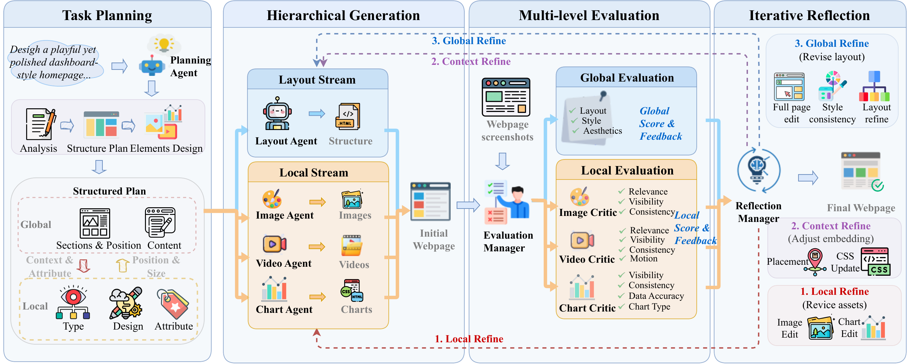
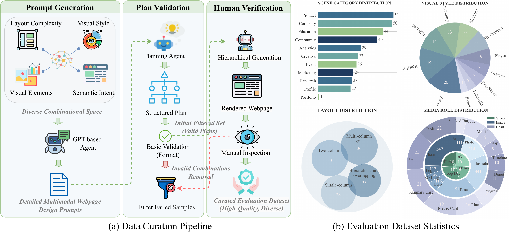
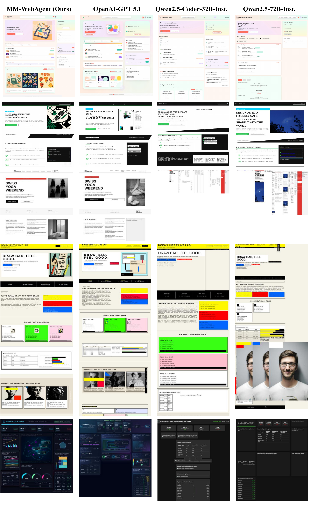
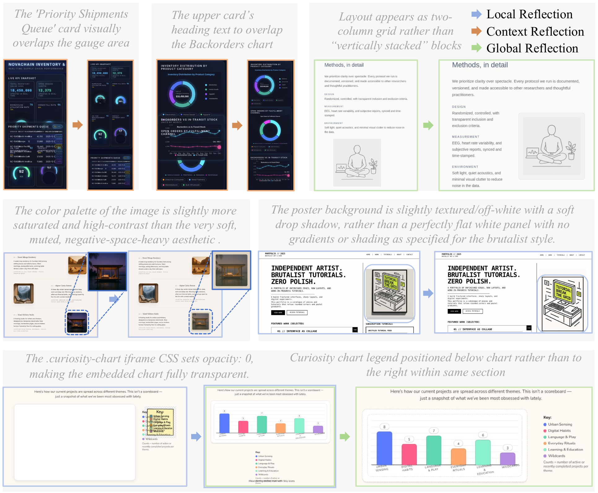

The rapid progress of Artificial Intelligence Generated Content (AIGC) tools enables images, videos, and visualizations to be created on demand for webpage design, offering a flexible and increasingly adopted paradigm for modern UI/UX. However, directly integrating such tools into automated webpage generation often leads to style inconsistency and poor global coherence, as elements are generated in isolation. We propose MM-WebAgent, a hierarchical agentic framework for multimodal webpage generation that coordinates AIGC-based element generation through hierarchical planning and iterative self-reflection. MM-WebAgent jointly optimizes global layout, local multimodal content, and their integration, producing coherent and visually consistent webpages. We further introduce MM-WebGEN-Bench and a multi-level evaluation protocol for systematic assessment. Experiments demonstrate that MM-WebAgent outperforms code-generation and agent-based baselines, especially on multimodal element generation and integration.

Improve the intrinsic quality of each multimodal element.
Refine surrounding HTML snippets to resolve misalignment, clipping, and spacing issues.
Use HTML code and rendered screenshots to enforce layout and style consistency across sections.

Paradigm Comparison on MM-WebGEN-Bench. MM-WebAgent achieves the best overall score (0.75) and improves both global metrics (layout, style, aesthetics) and local metrics (image, video, chart).
| Method | Global | Local | Average | ||||
|---|---|---|---|---|---|---|---|
| Layout | Style | Aesthetics | Image | Video | Chart | ||
| (I) Code-only One-shot | |||||||
| Qwen2.5-Coder-7B-Instruct | 0.01 | 0.00 | 0.78 | 0.41 | 0.00 | 0.24 | 0.24 |
| Qwen2.5-Coder-32B-Instruct | 0.09 | 0.03 | 0.84 | 0.39 | 0.02 | 0.28 | 0.27 |
| Qwen3-Coder-30B-A3B-Instruct | 0.13 | 0.15 | 0.57 | 0.08 | 0.00 | 0.25 | 0.20 |
| Qwen2.5-72B-Instruct | 0.10 | 0.02 | 0.82 | 0.40 | 0.00 | 0.25 | 0.27 |
| Gemini-2.5-Pro | 0.57 | 0.24 | 0.94 | 0.43 | 0.00 | 0.45 | 0.44 |
| OpenAI-GPT-4o | 0.02 | 0.05 | 0.48 | 0.06 | 0.00 | 0.02 | 0.11 |
| OpenAI-GPT-5mini | 0.63 | 0.40 | 0.95 | 0.21 | 0.00 | 0.50 | 0.45 |
| OpenAI-GPT-5 | 0.78 | 0.40 | 0.96 | 0.14 | 0.02 | 0.52 | 0.47 |
| OpenAI-GPT-5.1 | 0.73 | 0.44 | 0.96 | 0.05 | 0.00 | 0.35 | 0.42 |
| (II) Code-only Agents | |||||||
| i) Bolt.diy | |||||||
| Qwen2.5-Coder-7B-Instruct | 0.02 | 0.03 | 0.77 | 0.36 | 0.00 | 0.23 | 0.23 |
| Qwen2.5-Coder-32B-Instruct | 0.08 | 0.02 | 0.85 | 0.48 | 0.02 | 0.31 | 0.29 |
| Qwen3-Coder-30B-A3B-Instruct | 0.12 | 0.07 | 0.71 | 0.15 | 0.00 | 0.32 | 0.23 |
| Qwen2.5-72B-Instruct | 0.07 | 0.03 | 0.83 | 0.31 | 0.05 | 0.30 | 0.26 |
| Gemini-2.5-Pro | 0.63 | 0.24 | 0.93 | 0.38 | 0.00 | 0.50 | 0.45 |
| OpenAI-GPT-4o | 0.04 | 0.02 | 0.85 | 0.21 | 0.00 | 0.12 | 0.21 |
| OpenAI-GPT-5mini | 0.67 | 0.36 | 0.95 | 0.12 | 0.00 | 0.48 | 0.43 |
| OpenAI-GPT-5 | 0.77 | 0.43 | 0.95 | 0.06 | 0.00 | 0.50 | 0.45 |
| OpenAI-GPT-5.1 | 0.74 | 0.39 | 0.96 | 0.30 | 0.00 | 0.36 | 0.46 |
| ii) OpenHands | |||||||
| Gemini-2.5-Pro | 0.43 | 0.21 | 0.93 | 0.31 | 0.00 | 0.47 | 0.39 |
| OpenAI-GPT-4o | 0.03 | 0.02 | 0.83 | 0.11 | 0.00 | 0.04 | 0.17 |
| OpenAI-GPT-5mini | 0.60 | 0.31 | 0.94 | 0.05 | 0.00 | 0.47 | 0.39 |
| OpenAI-GPT-5 | 0.76 | 0.41 | 0.95 | 0.02 | 0.00 | 0.49 | 0.44 |
| OpenAI-GPT-5.1 | 0.61 | 0.33 | 0.91 | 0.00 | 0.00 | 0.36 | 0.37 |
| (III) Multimodal Web Agents | |||||||
| Gemini-2.5-Pro | 0.68 | 0.35 | 0.96 | 0.81 | 0.57 | 0.43 | 0.63 |
| OpenAI-GPT-4o | 0.16 | 0.10 | 0.86 | 0.42 | 0.29 | 0.32 | 0.36 |
| OpenAI-GPT-5mini | 0.73 | 0.42 | 0.95 | 0.84 | 0.63 | 0.50 | 0.68 |
| OpenAI-GPT-5 | 0.85 | 0.53 | 0.97 | 0.86 | 0.52 | 0.54 | 0.71 |
| OpenAI-GPT-5.1 | 0.83 | 0.54 | 0.97 | 0.88 | 0.75 | 0.54 | 0.75 |
MM-WebAgent generates webpages with more coherent layouts, more consistent visual styles, and better-aligned multimodal content than representative baselines.


If you find this work useful, please cite:
@misc{li2026mmwebagent,
title={MM-WebAgent: A Hierarchical Multimodal Web Agent for Webpage Generation},
author={Yan Li and Zezi Zeng and Yifan Yang and Yuqing Yang and
Ning Liao and Weiwei Guo and Lili Qiu and Mingxi Cheng and
Qi Dai and Zhendong Wang and Zhengyuan Yang and Xue Yang and
Ji Li and Lijuan Wang and Chong Luo},
year={2026},
eprint={2604.15309},
archivePrefix={arXiv},
primaryClass={cs.CV},
doi={10.48550/arXiv.2604.15309},
url={https://arxiv.org/abs/2604.15309}
}